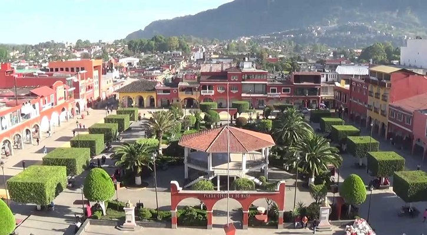
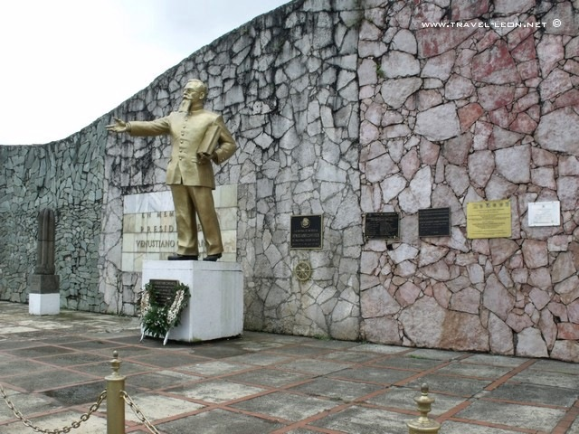
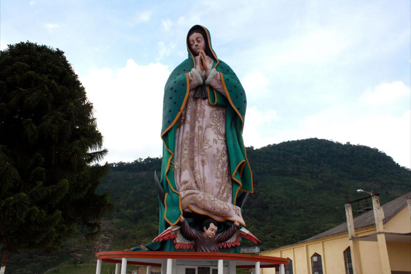
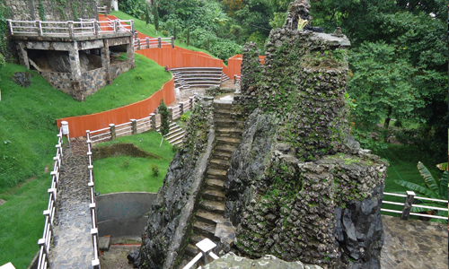

Sitios interesantes

Uno de los lugares más visitados de la ciudad, su
jardín central es uno de los más floridos en el estado de
Puebla por la cantidad de flores plantadas todas ellas
producidas por lugareños, árboles podados cuidadosa-
mente para dar la forma de figuras humanas, animales y
figuras geométricas, en su quiosco se reúnen bandas de
música de viento que deleitan las tardes de domingo a los
visitantes con sus melodiosas notas, y se pueden recorrer
sus pasillos acompañados de la familia, disfrutando de un
esquite, un elote preparado o un helado.

Conocida con anterioridad como la Parroquia del
Calvario, la Parroquia de San Juan Bautista fue fundada en
1571 por los monjes agustinos; alberga catacumbas de
cientos de moradores que vivieron entre los siglos XVI y
XVII. La Parroquia se encuentra ubicada sobre la calle
Iturbide y cuenta con un estilo gótico que se asemeja al
de la famosa Catedral parisina de Notre Dame.

Está fundido en bronce y su ubicación señala el sitio
donde Carranza fue asesinado por las fuerzas militares del general Rodolfo Herrera, el 21 de mayo de 1920. Se
ubica en el jardín central de Tlaxcalantongo.

Construida sobre el cerro del Tabacal, se puede
observar desde cualquier punto de la ciudad, su santuario
se ha convertido en un espectacular mirador, donde se
puede apreciar toda la ciudad desde las alturas, excelente
lugar para lograr imágenes panorámicas. Sin lugar a
dudas, es la Virgen de Guadalupe más grande del mundo
y es la quinta imagen más grande de México, con sus 30
metros de altura.

Son unos murales históricos realizados por el
maestro Felipe Castellanos que se encuentran en la
escalinata principal del Palacio Municipal donde se puede
apreciar su magnífico trabajo, donde el primer mural
plasma la vida de los antepasados de la región; el
siguiente mural plasmo personalidades de nuestra época
con su desarrollo; se tiene un vitral del glifo de Xicotepec
el cual resalta nuestro palacio municipal con estas bellas
artes.

En el año 1052, los pobladores de Aztlán recibieron
la orden de detenerse donde encontraran un águila parada
sobre un nopal devorando una serpiente; por la orografía
de Xicotepec no es posible encontrar nopales, no obstan-
te los caminantes fundaron en torno a una piedra colosal
de más de 13.5 toneladas de peso, el centro ceremonial
"La Xochipila"; ubicado a un costado del centro de Xico-
tepec, entre las calles Porfirio Díaz y Santa Rita.

enustiano Carranza nació el 29 de diciembre de
1859 en 4 Ciénegas, Coahuila. Y murió el 21 de mayo de
1920 en Tlaxcalantongo, Puebla. Se le llama así, ya que
en ese lugar se le realizó la autopsia a Don Venustiano
Carranza, días después de ser asesinado en Tlaxcalanton-
go. Su cuerpo permaneció aquí por 3 días y durante ese
tiempo Xicotepec fue considerado capital de la República
Mexicana. Hoy en día es un museo en su memoria.